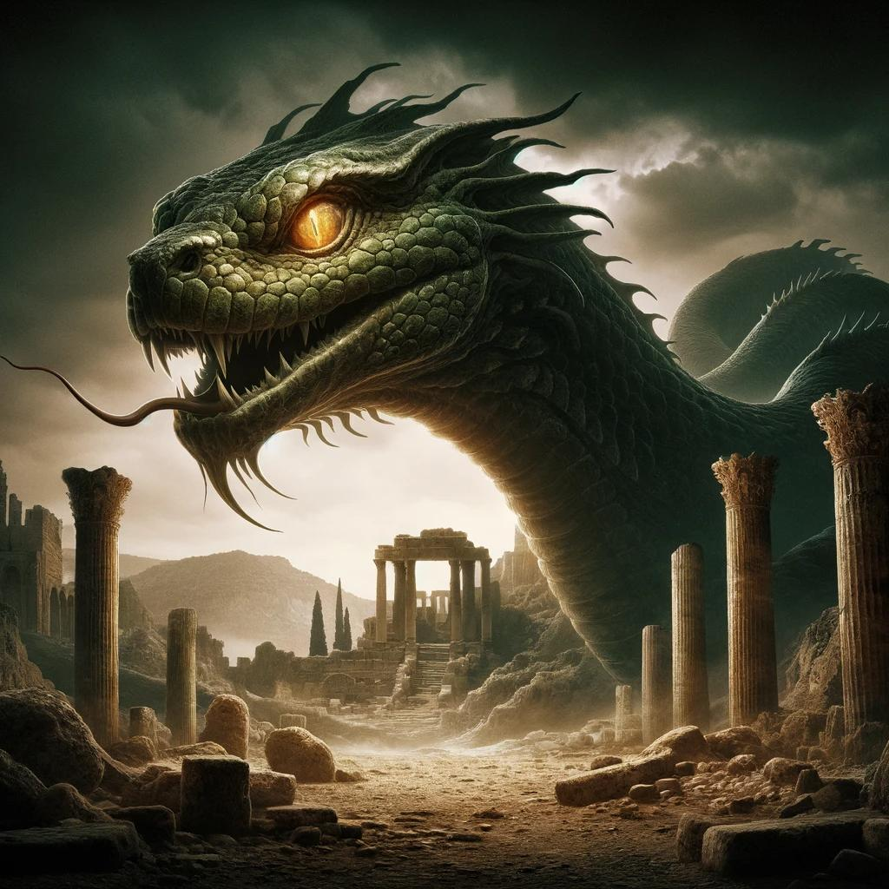

The Basilisk is a large serpent-like creature sometimes depicted as part bird and known for its deadly gaze and venomous bite. Just like stories of Gorgons meeting the eyes of the basilisk cause you to become petrified or die. The best way to defeat it is by using mirrors or its reflection. Its poison was said to be so strong that its bite would kill. In other stories, it was even said that its breath could kill or wither plants and animals. It was said in medieval legends that the Basilisk was weak to roosters due to the belief that they symbolize dawn and light. The Basilisk was used as a warning about evil and unchecked power.
The origin of the basilisk is traced back to ancient Greece and Rome. It was described as a small snake, but it was very powerful. Over time, the legend, along with the creature, grew. In medieval Europe, it was described more like a dragon.